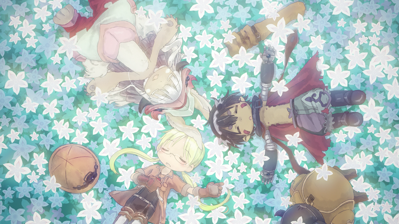
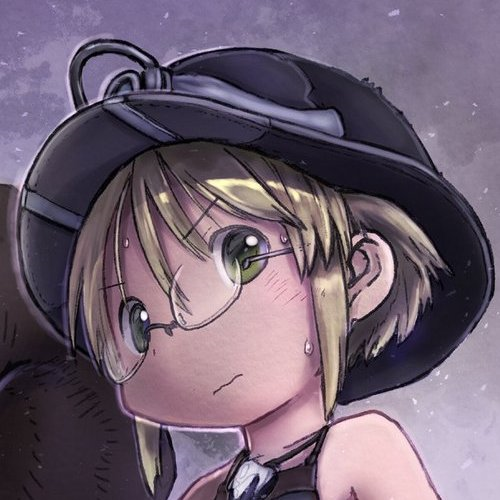
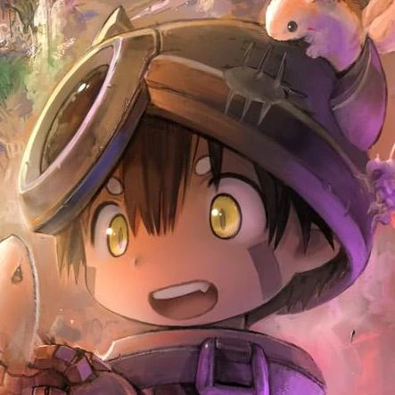

Made in Abyss
Synopsis
The "Abyss" is the last unexplored place in the world. Strange and wonderful creatures roam within, and it is full of precious relics that present humans can't recreate.
Those that dare to explore the depths are known as "Cave Raiders." An orphan girl named Riko lives on the rim.
Her dream is to become a Cave Raider like her mother and solve the mysteries of the cave system.
One day, Riko starts exploring the caves and discovers a robot who resembles a human boy.
(Source: anilist.co)
Characters
| Name | Description | Position on the show |
|---|---|---|
| Riko  |
Riko is the only child of the legendary White Whistle Lyza, the Annihilator. When she was two, her mother began her last dive to the bottom of the abyss. | Main Character |
| Reg  |
Reg is a robotic being who appears to be a little boy. His actual age, origins, and even name are unknown because he cannot recall anything about his life before his encounter with Riko. | Main Character |
Trailer
More Information
More Information about the show can be found on the anime tracking site Anilist.co (Made in Abyss)